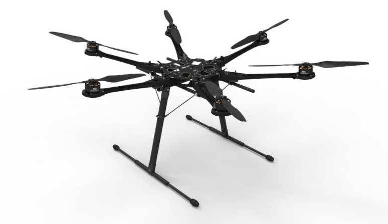
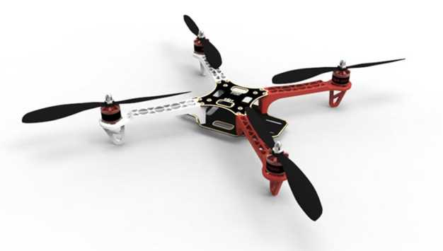

按照四軸飛行器的大小，我們粗略的將四軸飛行器分為大四軸和小四軸。其有很多部分是相同的，例如飛控部分基本一樣；但是又有區別，例如動力部分（包括電機和電機驅動）就可能完全不相同。作為四軸飛行器愛好者，我們當然需要知道DIY大小四軸的區別。
當然，Crazepony是一個小四軸。
大四軸根據其承載能力的大小，也分為不同的級別。例如DJI的S800大四軸，能夠掛載專業的單反相機，主要用於電影等的拍攝，其大小有大人雙手懷抱那麼大。風火輪系列則要小很多，大概有臉盆大小，適合掛載gopro等運動相機。

對於航模愛好者來說，DIY一個大的四軸飛行器也不是一件容易的事情。你可以購買品牌廠商的整套解決方案，然後自己進行組裝調試，例如DJI的S800系列。不過對於很多愛好者來說，價格會比較貴，一套S800的價格在3萬人民幣左右。你也可以自己購買組件，自己組裝。一般需要購買的組件包括：飛控，電調，無刷電機，遙控器，電池，支架等。當然，也見過有愛好者自己用各種材料DIY支架，有用鋁合金的，也有用木頭的。根據自己的需求購買組件DIY的成本會低很多，一般的可能就是￥1000～￥2000左右。
DIY大四軸需要有比較專業的知識，例如電子部分的連接，飛行器結構重心的調整，遙控器的對頻和干擾，根據飛行器結構或者飛行現場風力等對飛控PID等參數的調節（簡稱調參）。總之，如果有一個環節出現了問題，那麼就會導致飛行器無法飛起來，或者出現炸機（指飛行器從空中摔下來）或者失控（指飛行器不受遙控器控制）的問題。

另外還需要注意的一點是，大四軸由於其塊頭大，螺旋槳轉速快，撞到人或者物都會比較危險。所以一定要選擇無人，空間寬闊，視野好的地方進行飛行。常見的一個事故就是射槳。射槳就是飛行器的螺旋槳因為旋轉時轉速太高，超出了旋翼所承受拉力的設計值時，槳根斷裂，由於旋轉時的巨大慣性，殘槳像炮彈破片那樣高速飛出去，威力很大（相對來說），會打傷人，所以形象的稱為“射槳”。有時旋翼固定螺絲鬆脫或碰到異物導致旋翼斷裂也會導致射槳。如果射槳擊中人，尤其是眼睛等脆弱的部位，會是非常危險的。所以對於新手來說，調四軸最好帶護目鏡保護眼睛。
小四軸是相對於上面的大四軸來說的，這裡我們指手掌大小的四軸飛行器。一般來說，小四軸直接使用電路板作為承載的支架，當然也有使用單獨支架的。
小四軸由於其體型小，所以一般無法承載太重的負載。但是用來研究飛行器的原理，作為入門航模的通道，已經完全綽綽有餘。在大四軸中提到的組件飛控，電調，電機，遙控器，電池，支架等都一樣在小四軸中存在，只是可能根據小四軸的特點有些改變。下面這些就是小四軸的好處。